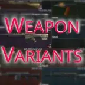
Definitive Weapon Variants
- Downloads
- 35,259
- Favourites
- 27
- Mod lists
- 86
The mod was originally created to add unique, OP, strange, or gimmicky weapons for The Gambler. However, it has since grown into a standalone mod that offers something beyond its original scope. The core premise is that weapon variants must be somehow earned to use them. Some of these variants are imbalanced, handle differently, or simply serve as upgrades to existing weapons.
Features
- 687 new weapons
- 58 different variant types, each including their own flavour text and description
- 36 special Unique weapons with their own presets
- 8 different qualities, each identified by color-coded names and backgrounds
(better with ColorConverterAPI) - 22 special currency of 4 types that can improve your Variant Weapon or/and be used to buy Blind Boxes containing random Variants
- 2 new cases for storing special currencies
- Manipulate each variant as you see fit and add new weapons to variant types, even from mods
- Find variants in a lot of different places: in Airdrop, in Fence, on the Flea Market, in Marked Rooms on a few maps, and in a few loot containers in all maps
- Config with a lot of different changes that can made to the mod to fit it to your preferred playstyle
- Compatible with ~4.0.13 SPT version, download for versions for SPT 3.11-3.9 can be found in versions tab or github page
- Compatible with all “kill using certain weapon” type quests (see weapon descriptions for details)
Weapons in stash with colors from Color Converter API
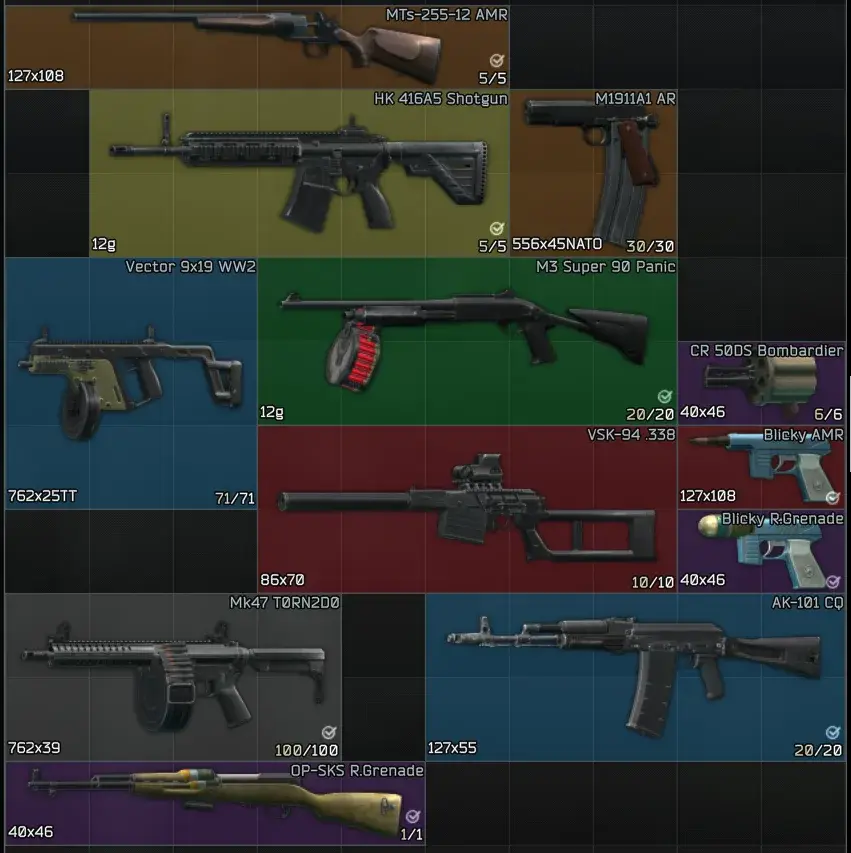
Difference between normal and the same built Meta Variant weapon
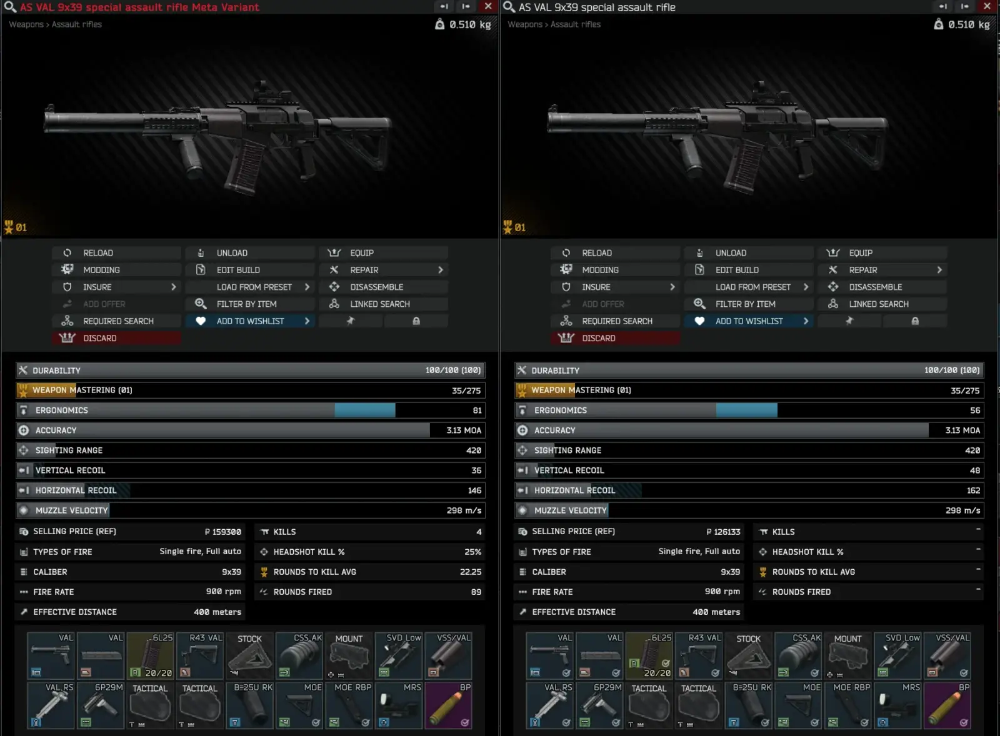
Variant weapons in Fence
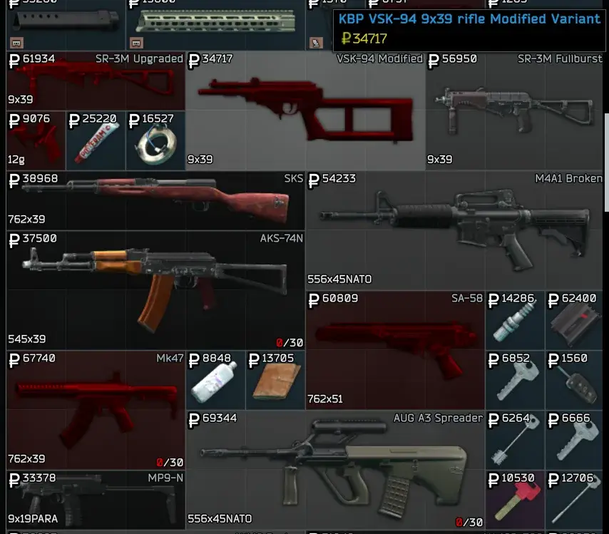
Variant weapons in Flea Market
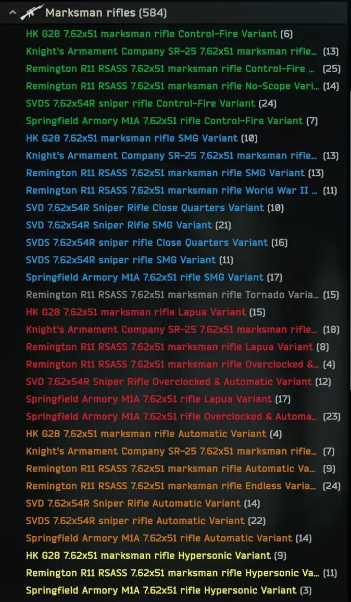
Blicky Rifle Grenade Launcher!
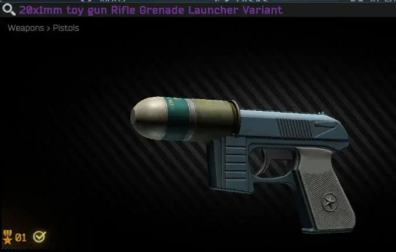
AK-101 World War II Variant in Hideout
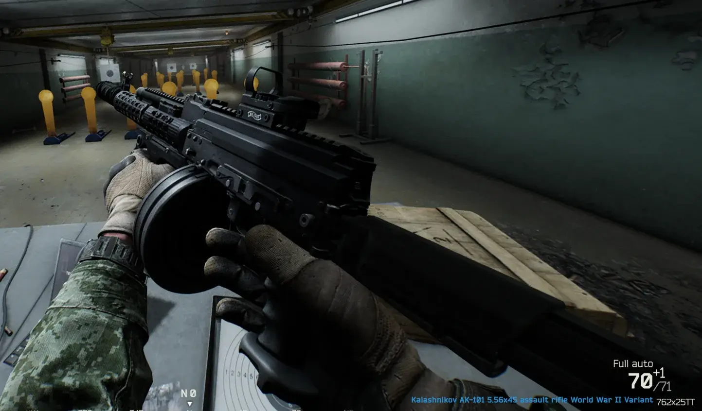
Colored names!
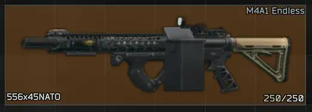
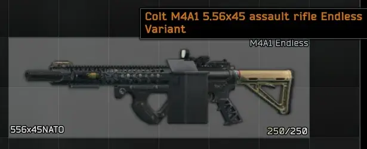
Installation
Installation is the same as for all other mods available on Forge
-
Download the Mod by clicking blue “Download Latest Version” button
-
Extract the contents of the downloaded file into the main SPT folder
Update
Install the mod again and replace all files if prompted
New features will use their default values until the config file is updated. You can update it in 2 ways:
- Copy the new entries from “defaultConfig” into “config”
- Rename your “config” file to “OLDconfig”, copy “defaultConfig”, and rename it to “config”. Then check what you changed in “OLDconfig” and apply the same changes to the new “config” file
Reinstallation
Check SPT 4.0\SPT\user\mods\DefinitiveWeaponVariants\db\99_Ids for files with dates in their names (for example: “ids_2026-04-30_14-15-39.json”)
If you have any, these files correspond to additional items added in your specific installation of DWV. Do not remove them. Save them in another location and, after reinstalling the mod (removing the DefinitiveWeaponVariants folder and following the installation steps again), place them back into the same folder.
Configuration
The configuration file is located in the following path:
- SPT 4.0\SPT\user\mods\DefinitiveWeaponVariants\config
In there you can find 1 or 2 files:
- “defaultConfig.jsonc” - as the name suggests, this is the default config file. Do not change anything in it. It is used to restore a working config if your “config” file becomes unusable
- “config.jsonc” - this is the main config file. If you do not have this file, run the server once or make a copy of “defaultConfig” and rename it to “config”
Only changes made in “config.jsonc” will affect the mod
Recommended gameplay
- Install ColorConverterAPI
- Install Variant Core Slot Picture Addon
- Install APBS - Acid’s Progressive Bot System
In DWV config: change “EnableAPBSBlacklistGeneration” to true
In APBS web config: “Mod Import & Compatibility” change:
Modded Weapons to true
All weights to 1
Modded Attachments to true
Tiers Appearence Level to 1 - Install Tyfon - UI Fixes
In game F12 config: change “Modify Weapons In Raid” to “Always” or “With Multitool”
In DWV config: change advanced option “VariantCores” => “Required” to true
For even more variant action:
- Install WTT - Content Backport
- Install WTT-Content Backport Variant Weapons
Some nice combos can be made with my other mod:
- Install Amonya - Ammo Loving Trader & Quester
In DWV config: change “AmonyaTraderMode” to true
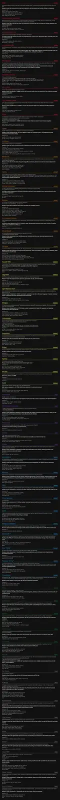
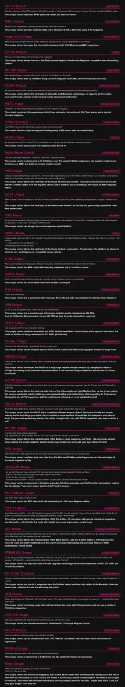
The Vision™ System
The main purpose of the Vision™ system is to make each of your Tarkov playthroughs unique. This means getting very different variant weapons each time you play. Instead of buying variants from different sources or unlocking them through gameplay, you can obtain them at random from a few different sources:
- Fence
- Airdrop
- Marked rooms
- Loot containers
- Variant Blind Boxes
Only variants on the Flea Market are available deterministically, but the Vision™ system considers the Flea Market to be a form of cheating.
If you feel that you are getting too many or not enough variants, you can always change the config file!
Default odds and quality availability can be found below:
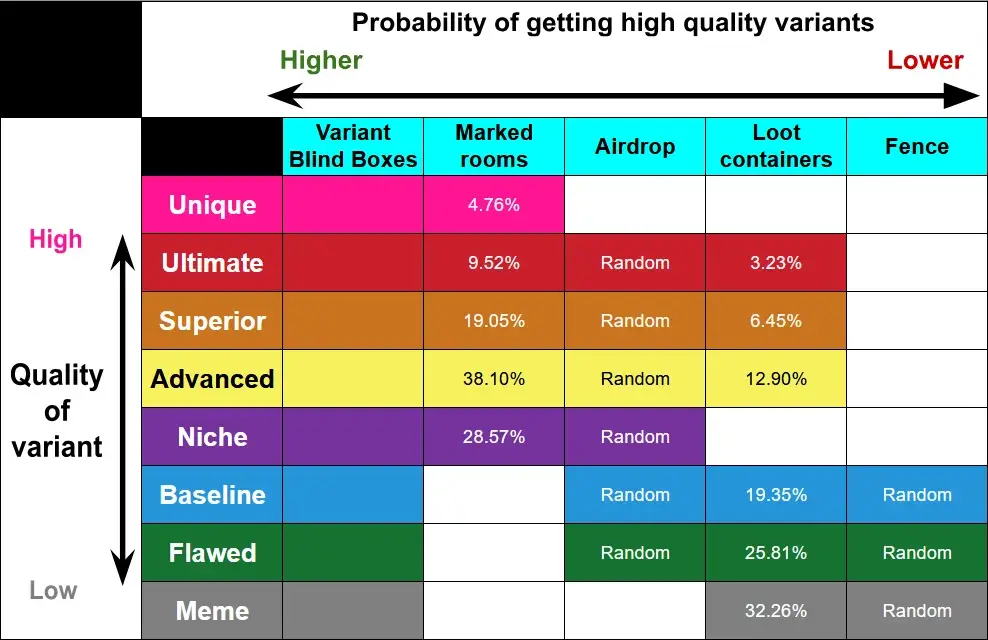
Variant Weapon Cores
This mod introduces a special type of currency that matches the quality of Weapon Variants while also functioning as an attachment
It can only be installed in the Mod Core slot available on Variant Weapons
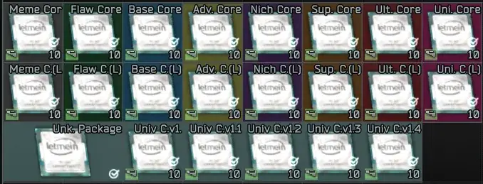
There are 4 different types of Cores:
- Normal
Can be found in weapon variants and when installed in a weapon, adds 5 ergonomics
Can be used to buy Weapon Variants Blind Boxes of respective quality, that contains 1 random variant weapon of that quality - Locked
Can be bought with 3 Normal ones of the same quality and when installed in a weapon, adds 7 ergonomics
Can’t be used to buy Weapon Variants Blind Boxes, but they will not be taken out of the weapon when exchanging Cores for Blind Boxes. In exchange they have higher roubles value and are adding more ergonomics - Universal
Can be only received while opening Unknown Weapon Variant Core Package and slotted in weapon will decrease recoil by 1-5% and add 12-8 ergonomics (1%/12, 2%/11 and so on)
Has the highest roubles value and can’t be used to buy Weapon Variants Blind Boxes - Unknown Weapon Variant Core Package
Can be bought with Roubles
Can be found in specific containers on all maps (Jackets/Dead scavs/PC Blocks/Plastic Suitcases/Safes)
Can be opened to receive 5 random Variant Cores. The loot pool contains:
All Normal Variant Cores with doubled weight
All Universal Variant Cores with a weight of 1 each
In short:
- Normal Cores are mainly used for buying Blind Boxes
- Locked Cores are designed for players who want to keep cores installed in their weapons
- Universal Cores are intended to make your favourite variant weapons stronger
This manual can help you create your own variants.
You should have at least basic JSON knowledge or at least some pattern recognition skills.
Please use Notepad++ or a better text editor.
If you need help, you can message me on Discord.
Terminology
-
MongoID – A 24-character hexadecimal number that represents any item in the game.
Example: AK-74N →"5644bd2b4bdc2d3b4c8b4572"(https://db.sp-tarkov.com/search/5644bd2b4bdc2d3b4c8b4572) -
Preset – A set of items added to a weapon, creating a complete build.
-
Filter – A list of MongoIDs representing which items can be used in a slot/chamber.
-
ShortName – The name displayed on the item’s miniature in equipment.
-
Variant ShortName – Weapon shortname + variant shortname.
-
Slots – Places on a weapon where items can be attached.
Example: slot"mod_magazine"has a filter listing all allowed magazines. -
Chambers – Most weapons have a chamber slot for a single round.
The filter determines which ammo the weapon can fire.
Weapons without a chamber will accept any ammo allowed by the magazine filter. -
Cartridges – (Magazine only) The filter that determines which ammo can be loaded into a magazine.
-
FilterSlotConfiguration – Custom config used by this mod that makes creating or editing filters easier. You can replace existing filter, add new allowed items, or copy filters from other items.
-
Key – A name for a piece of data in a JSON file.
-
Keyed object – Means data stored under a specific key. When you edit a JSON file, you are changing values belonging to these keys.
Mod Paths
Do NOT edit existing files! You will lose your changes in every mod
update.
All files in each folder are loaded automatically, so you can safely
create new ones.
db/01_Variants– Variant configuration — keyed by variant full namedb/02_Items– Item configuration — keyed by item full namedb/03_Shortnames– Weapon shortnames — keyed by weapon short name and containing MongoIDs as valuesdb/04_Presets– Presets for variant weapons or base weapons — keyed by variant shortname or base weapon shortnamedb/99_Ids– Contains IDs of all created items — keyed by their text identifiers
Adding a Weapon from the Mod to the Database
This is not required, but it helps a lot when creating variants.
In db/03_Shortnames, create a new .json file:
- Weapon ShortName – The name used in
db/01_Variants - MongoID – The exact ID of the weapon
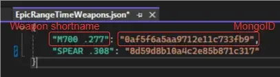
For easier ID search, I recommend:
https://forge.sp-tarkov.com/mod/1617/give-ui
You can find IDs by searching the item name.
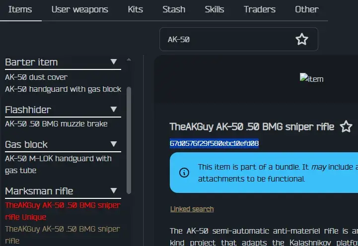
Adding a Weapon to an Existing Variant
In db/01_Variants, create a new .json file:
- Variant full name – e.g.
"Meta","Buckshot Launcher", etc. - List of weapon shortnames or MongoIDs – from
db/03_Shortnames
You can optionally include "IndividualChanges" to apply changes only
to certain weapons in this variant (details later).
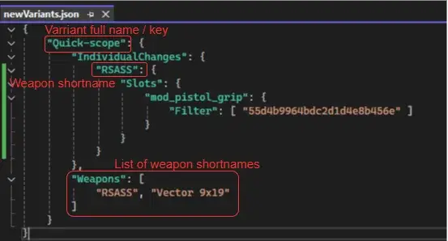
Editing an Existing Variant
In db/01_Variants, create a new .json file:
- Variant full name – e.g.
"Meta","Buckshot Launcher", etc. - Properties – new properties that will be added or will change the value of an existing one
This will replace existing value of the property of the variant with a new value, or add a new property.
In the example below, the "WeapFireType" property was originally ["burst"], now it will be ["burst", "fullauto"],
"Velocity" property didn’t exist on "Fullburst" variant type, so it will be simply added to it.
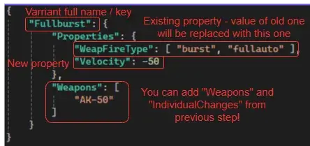
Adding a New Variant Type
In db/01_Variants, create a new .json file.
Check existing variants for reference.
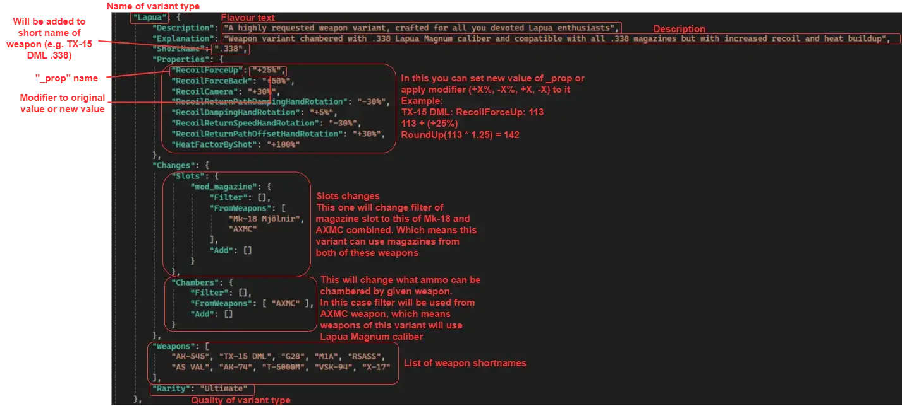
-
key:
"variant full name"– Full name of the variant (should not be changed after creation) -
Description – Flavor text
-
Explanation – What this variant does
-
ShortName – Shorter name of the variant full name (should not be changed after creation)
-
Properties – List of properties to modify
Types must match the original exactly (check db.sp-tarkov).
For number values you may use:+number%-number%+number-number
These modify the base value of the weapon.
-
Changes
- Parent – Change the weapon’s category by replacing its parent MongoID
- AddToInventorySlots – Added weapon can be equipped additionally in:
"FirstPrimaryWeapon","SecondPrimaryWeapon","Holster" - Minimum – Ensures a property has at least this value before
applying modifications
- For example: Useful for single fire mode weapons with extremely low
BFireRate
- For example: Useful for single fire mode weapons with extremely low
- Slots – Keyed by slot name
Uses FilterSlotConfiguration, replaces or modifies filters - Chambers – Same as above, but for chambers
- FilterSlotConfiguration details:
- All lists can contain weapon shortnames, MongoIDs, or item
full names
Filter– completely replaces the filter (empty[]removes the slot if it is only one)FromWeapons– copies the filter from another item\Add– keeps the current filter and adds to it
- All lists can contain weapon shortnames, MongoIDs, or item
full names
-
IndividualChanges – Keyed by weapon shortname
Can contain:"Slots""Chambers""Properties"
Use this to modify only certain weapons, not the entire variant.
-
Barter
TraderId– Uppercase vanilla trader nameLoyalLevel– Required trader LLUnlimitedCount– Whether stock is infiniteStackObjectsCount– Amount per restockPrice– What it costsBarter– ID of item to barter for (omit for roubles)
-
Weapons – List of weapon shortnames or MongoIDs the variant applies to
-
WeaponIdToUseAs – Changes which weapon ID kill quests count as (omit to use base weapon)
-
Rarity – One of the following:
Unique, Ultimate, Superior, Advanced, Niche, Baseline, Flawed, Meme
(Do NOT use other values)
Adding New Items
Some variants require custom attachments or magazines.
You can create them similarly to variant types.
In db/02_Items, create a new .json file:
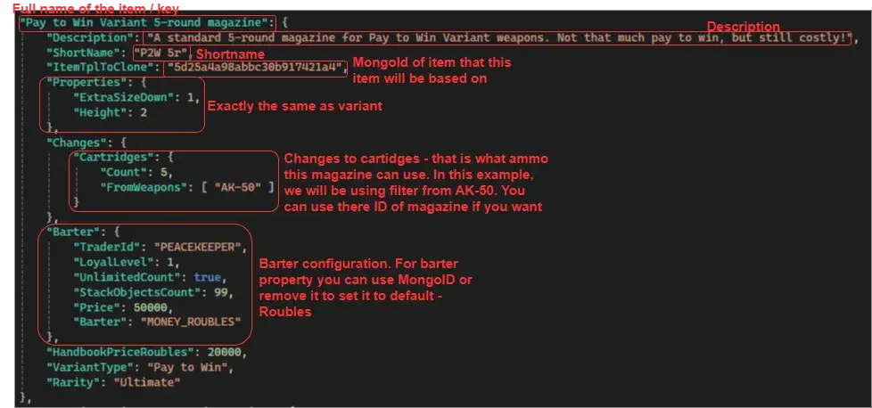
- key:
"full name of the item"– to reference it in FilterSlotConfiguration - Description – Item description
- ShortName – Shorter item name
- ItemTplToClone – MongoID of the item to clone
- Properties – Same rules as for variants
- Changes
- Slots – Same as variants
- Cartridges – (magazines only) FilterSlotConfiguration
- Add
"Count"property to define ammo capacity
- Add
- Barter – Same as variants
- HandbookPriceRoubles – Base rouble value
- VariantType – Full name of the variant this item belongs to
- Rarity – Same as variants – should match VariantType
Adding a Preset
Presets allow the weapon variant to start with custom attachments.
You can create a preset in game and export it via:
https://forge.sp-tarkov.com/mod/106/spt-aki-profile-editor
Then remove all properties except " _items ".
In db/04_Presets, create a new .json file:
- Add a key using the Variant ShortName
- Include the
"_items"list inside it
To replace an item with one created by this mod, add this to the correct slot:
"desc": "full name of the item"
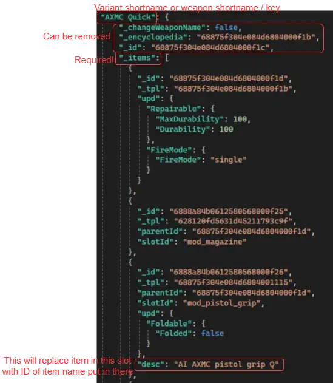
This tells the preset to use the MongoID of your custom item.
You can also use a preset keyed by weapon shortname to replace base presets, e.g. to add a default scope to all variants of certain weapon.
Notes
-
When you create a new variant or item, a file will appear in db/99_Ids.
This file contains all IDs for the variants/items you created.
Do NOT delete it — you will lose your custom items from your inventory after server restart. -
When creating addons, make sure you did not forget any file you created and files generated in db/99_Ids.
Check the “Mod paths” section and verify every folder has the needed file(s).
Extended Compatibility
-
APBS - Acid’s Progressive Bot System: In config file you can find option to enable automatic blacklist generation. This option allows locking high-quality variants behind bot tier level. You SHOULD enable this option for better experience when running Variants with custom weapons option enabled in APBS
-
Amonya - Ammo Loving Trader & Quester: Additional option can be find in config that will move all items from vanilla traders to Amonya
“Works well with” Compatibility: (recommended mods!)
-
Lacyway - Hands Are Not Busy: some unintended interactions between mods can cause your character to stop responding to any input, but if you have this mod, just use “End” to get rid of this issue!
-
Tyfon - Weapon Customizer: allows moving changed magazines to better position
-
Tyfon - UI Fixes: allows removing Variant Cores from “required” slots when this option is enabled in config and UI Config option “Modify Weapons In Raid” is changed to “Always” or “With Multitool”
Full Compatibility:
-
Project Fika: Tested and confirmed to work
Partial Compatibility:
- Mods changing background of all items will change custom colours used by this mod
Not Compatible:
- Mods altering weapon handling may cause issues, potentially breaking some weapons
Suggestions
Don’t see your favourite weapon in your favourite variant?
Some weapon variant handles strange? Or is broken in some way?
You have experience in modding weapons and can help me balance or change further some variants?
Reach me out on discord, at “Szonszczyk”, and tell me all about it!
Credits
About half of the weapon variants were suggested by Amidorak
Play tested by Amidorak
Honorable mentions
GroovypenguinX - first versions of this mod was based on code from his mods
Hood - this mod was created to simply add new weapons to loot boxes. Oh well…
AcidPhantasm - for easy adding variants to enemies via APBS. Bots shooting Fullburst variant are the best
DeadLeaves - I found your code for text colors in Fika discord and added them to this mod
Valens - I based my Marked room code on your mod, sorry and thank you
Version
4.3.1
- Fixed incorrect trades for upgrading cores
- Fixed missing trades for new cases
Version
4.3.0
Variant Cores System Update and Balance Patch
New storage cases for Variant Cores, more config options, many variant types changing quality, 36 new weapons (including 6 uniques)!
Variant Cores System Update
- Added Expeditionary Variant Core Case that allows storing up to 20 of every type of normal Variant Core and can be placed inside secure containers. Can be purchased with 12 Baseline Cores
- Added Variant Core Carry Case that can store a large number of Variant Cores in your inventory at once. It has 40 slots for normal and Locked Cores, 10 slots for Universal Cores and 50 slots dedicated for Unknown Packages and Blind Boxes. Can be purchased with 30 Baseline Cores
- Added a 3:1 exchange option for upgrading Variant Cores. By default, upgrading is only available up to Baseline quality
- Adjusted the probabilities of items received from Unknown Packages and added Locked Cores to the loot pool
- Locked Cores can be broken into normal ones in cultist circle
- Added 4 new Universal Variant Cores
- Unknown Package weight has been lowered and can now be adjusted in the config
- Added many other options to the config file
If you want to make any changes to the Variant Core system, update your config. Instructions can be found in the mod description
Content Update
- Added 6 new Unique Variant Weapons:
AA-12 Gen 2 >Endless Launcher<
RFB >Automatic No-Scope<
VPO-215 >Recoiless Lapua<
AK-103 >Russian Market<
MP5K-N >Handy Assault Rifle<
Blicky >Neverending< - New Baseline Variant - Smoothbore
Weapon variant capable of using both .366 TKM and 7.62x39mm ammunition (primary caliber: .366 TKM)
Containing 9 new weapons - New Niche Variant - Railgun
Weapon variant chambered in 40x46mm grenades with unbelievable muzzle velocity, allowing grenades to be launched at nearly normal bullet speeds
Containing 4 new weapons - New Meme Variant - Early Prototype
Weapon variant chambered in 7.62x54mmR that can use a larger variety of magazines
Containing 11 new weapons
Balance Patch
- Lapua
Quality lowered from Ultimate to Superior
Added exclusive 20-round and 30-round magazines for this variant - Assault Rifle
Quality lowered from Superior to Advanced - Overclocked
Quality lowered from Advanced to Baseline - No-Scope
Quality lowered from Flawed to Meme
Increased ergonomics from +15 to +25
Now has increased fire rate
Added RFB to this variant type - Close Quarters
Now has reduced recoil, fire rate and muzzle velocity
Added exclusive 30-round and 40-round magazines for this variant
Changed description - Endless
Added a new 40-round magazine for bolt-action rifles
Added AXMC, SV-98, Mosin Sniper, M700 and TRG M10 to this variant type - FURY
Quality increased from Baseline to Advanced - Slav “Thing”
Quality increased from Meme to Baseline - Freedom “Thing”
Quality increased from Meme to Baseline - Converted
Quality increased from Meme to Flawed - Glass Cannon
Quality lowered from Niche to Meme - BFG-50
Quality increased from Meme to Flawed - SKS Unique
Fire rate increased from 40 to 469
Other
- Moved required SPT version to 4.0.13
- Fixed background colors of items when modified by other mods
Version
4.2.0
Variant Cores are moving out of beta!
- Added Locked Variant Weapon Cores. Can be slotted in the same slot as Variant Weapon Cores, but give 7 ergonomics instead of 5. These Cores can’t be exchanged for Blind Boxes but have higher roubles value
They can be bought with 3 of the normal cores of the same quality, by default in Peacekeeper LL2 - Added Unknown Variant Weapon Core Package that is priced in roubles and can be opened for a few random Variant Weapon Cores with Quality-based odds
Can be also found in Jackets/Dead scavs/PC Blocks/Plastic Suitcases and Safes in all maps - Added 5 Universal Variant Weapon Cores that have higher ergonomics values, than Locked Variant Weapon Cores, and are reducing recoil. Unlike other Core that can only be slotted in matching quality Variant Weapons, these can be slotted in ANY Variant Weapon
These can only be received rarely from opening Unknown Variant Weapon Core Package - Ergonomics value added by normal and locked versions of Variant Cores can now be changed in config file
- Containers that have added Variants or Unknown Variant Weapon Core Package have now more loot, +1 on average
- Variant Weapon Core slot received correct texture - you can find it in addons!
Next step will be adding different textures for Variant Cores…
Content Update
- Added 10 new Unique Variant Weapons:
RSASS >Marksman Shotgun<
AVT-40 >Unbreakable LMG<
ASh-12 >Hypersonic Point & Laser Click<
MP-153 >Endless Panic<
SKS >Off-Meta Meta<
Sawed-off >Bullshit Launcher<
Mk-18 Mjölnir >Real MP5<
FN 5-7 >Automatic P2W<
UZI >Experimental Black Market<
SPEAR 6.8 >Actually Upgraded< - Pistol variant was split into Pistol - chambered in 9x18mm and Desert - chambered in 50AE
Moved DVL-10, M700 and TRG M10 to “Desert” variant type
Added Mosin Sniper to “Desert” variant type
This change should resolve issues with APBS compatibility when APBS bot is spawning with that weapon - Added 35-round magazine for Shotgun variant weapons (including RSASS >Marksman Shotgun<) that can be bought with roubles and 1 Advanced Quality Variant Core
Balance changes
- Pay to Win Variant 30-round and 50-round magazines now require 1 and 2 Ultimate Quality Variant Cores respectively to buy. Roubles cost has been lowered to compensate
- The Unheard Edition Variant 20-round and 30-round magazines now require 1 and 2 Ultimate Quality Variant Cores respectively to buy. Roubles cost has been lowered to compensate
Note: if you disable variant cores in config, these magazines will be impossible to buy
Other Changes
- Removed 2 legacy items
- Added new “Unknown” rarity used in Universal Variant Weapon Cores, Unknown Variant Weapon Core Package and Blicky Special Magical Unbelievable Magazine
Version
4.1.2
- Fixed incorrectly disabling 12.7x108mm B-32 trade if “AmonyaTraderMode” config option is disabled
- Changed probability calculation for Variant Cores in pockets
- Added config option to make Variant Cores slot “required” (default: false)
Note: If this config option is enabled, you won’t be able to remove Variant Cores from weapons while in raid.
Unless you use UI Fixes config option: “Modify Weapons In Raid” changed to “Always” or “With Multitool”
This config option will fix variant weapons equipped by APBS bots not having Variant Cores in their usual slot
Version
4.1.1
Restored Feature - Automated APBS Blacklist Generation
- Can be enabled in the config file
- Weapon qualities available to bots of each tier can be configured in the advanced section
- Variant Types that should be excluded from bots can be blacklisted in the advanced section
Other changes
- Added an option to add all items to Amonya instead of vanilla traders
- Added NSV Utyos and AGS-30 to the shortname database, but please don’t use them to create variants
- Removed the .50 AE caliber from the Pistol Variant Type to resolve conflicts with APBS
- Rifle Grenade Launcher Variant Type weapons can now also chamber 30x29 grenades (Hint: you can find them in my Amonya mod!)
- Updated config loading logic to better handle errors
Bugfixes
- Fixed item slot removal logic (affects No-Scope and BFG-50 Variant Types)
- Fixed error handling when a base weapon or item is missing
- Removed an incorrect item from a preset that was causing a fatal error when the weapon was added to a marked room
- Fixed the “Can be bought at X LL0” line appearing in Variant Core descriptions when the VariantCores.Buyable option is disabled
Version
4.1.0
New Feature - Variant Blind Boxes
- Variant Weapon Blind Box can be opened to receive one of variants of the same quality as Blind Box
- Can be bought using roubles or new Variant Cores currency
New Feature - Variant Cores (BETA)
This feature is in beta - it’s working but I have my doubts about this system and I have some issues that I am unable to resolve with my current skill (white square as slot and Cores having PC CPU asset instead of something new), but let me know what you think about it! If you don’t like it, it can be toggled off in config
- All weapon variants can now spawn with special “Core” item in one of its slots
- Core item is giving +5 ergonomics to a weapon
- These core items have the same quality as variants
- Cores can be exchanged for new Variant Blind Boxes of respective quality
- Cores can be also found in scav pockets, after you kill them, as they didn’t add pick pocketing to Tarkov… yet
Content Update
- Added 10 new unique variants
PKM >Heavy P2W Gun<
AK-74 >Overclocked Meta<
G36 >All caliber<
AXMC >Sonic<
M700 >Standardized<
AKMS >Overpowered<
M1A >Faster Control-Fire<
APB >Stormtrooper<
STM-9 >Automatic FURY<
AS VAL >Unbreakable P&C< - Variants can now spawn in Weapon boxes, Duffle Bags, Wooden Crates and Caches
- Changed variants generation in Marked Rooms to use weight system
Balance changes
- Rifle Grenade Launcher rework:
Now all weapons can use their own caliber and magazines with addition of 40x46 grenade caliber
Special 1-round magazine was removed from weapon filters
Added special 7-round internal magazine to AXMC, OP-SKS, Mosin Infantry and TRG M10 Rifle of this variant type - BFG-50 lost its special magazine and its magazine slot
Added 3 new weapons to this variant:
M1A
RFB
AK-104
Bugfixes
- Fixed bug causing applying Individual Changes not only to defined weapon but to all weapons in variant type generated after it This fixes some weapons from Off-Meta, KS and Panic Variant types having incorrect fire modes
Other Changes
- Removed Price and Barter properties from Barter property in Variant Configuration and replaced it with new combined property BarterPrice
This allows adding multiple items as barter
“Make your own!” section in description was updated with new values - Allowed editing existing variant types - more about it in the “Make your own!” section
Version
4.0.2
- Fixed revolver variants straight up not working - Thank you Snake_Eater for reporting!
- Fixed some revolver variants not displaying correct caliber information
- Fixed some shotgun and revolver variants being added to incorrect equipment slots
Version
4.0.1
- Fixed variants unable to be added to flea market, Fence and airdrop - Thank you MarkDaWizard for reporting!
- Added additional line of text to description of all weapons
- Fixed minor spelling mistakes
Version
4.0.0
New Feature - Unique Variants
- New quality type is now available - Unique
- Each weapon will have their own unique variant type, mostly done by combining two existing ones
- Each unique variant have their own flavour text, description and preset
- This release have 10 new unique variants, with more to come with each new update:
AK-101 >SMG & WWII<
M4A1 >7.62x51 Meta<
Vector 9x19 >5.56x45 Speedy<
SVT-40 >Blicky<
MP-155 >Sniper AMR<
AK-545 >Automatic Marksman<
M870 >Karabin Spetsialniy & Buckshot Launcher<
PPSh-41 >Actually Endless<
AK-50 >Real AK<
Mosin Sniper >Anti-Unheard Rifle<
SPT 4.0 Release & Content Update
- Completely rewritten mod to C#
This means possible bugs, but with better error handling - Recreated all Meme quality variants from scratch
The point of this change is to make these weapons playable
The logic behind them is now “trade everything for one OP thing” - Added AK-50 to a few variants
Meta, The Unheard Edition, Automatic, Handy, Rifle Grenade Launcher, Quick-scope
That’s a lot, but the gun is special - so the variants are special too! - Added 3 new variant types, 1 Ultimate quality and 2 Niche quality
- Weapons found in marked rooms now have ammo in theirs magazines
- A few balance changes and fixes
- REMOVED: Blacklist generation for APBS
- REMOVED: Bosses Have Variants preset generation for APBS
- REMOVED: Compatibility with TheGambler
All of these functionalities will be added in future updates
Meme variants quality rebalance:
- Fullburst variant received massive buff and is now shooting only 30 ammo per burst instead of 100
- Meme variant - (replaces Broken) Experimental Variant
Name change and overhaul, now has no recoil, increased fire rate and only full auto fire mode, but still with massive durability burn and malfunction chance - Meme variant - (replaces Wild) Slav “Thing” Variant
Name change and overhaul, now is less wild and can use AKM magazines as well as RPD. Only American guns are allowed here - Meme variant - (New) Freedom “Thing” Variant
Weapon variant chambered in 5.56x45mm NATO with decreased recoil, increased ergonomics and fire rate but with increased stabilization point. Only Russian guns are allowed here - Meme variant - (replaces Dunk Spreader) Lawn Mover Variant
Name change and overhaul, sacrifice everything to increase its fire rate - Pistol Variant can now use 50AE caliber and is now dual-caliber
- Meme variant - (New) 50-BFG
Weapon variant chambered in .50 BMG with significantly increased recoil, slightly increased ergonomics and with only a 1-round magazine - Meme variant - (New) Laser Rifle Variant
Weapon variant chambered in 9x21mm caliber ammo, shooting 3-bullet burst with incredible fire rate and increased muzzle velocity - Flawed quality Mid-Range variant is now Converted variant of Meme Quality and is featuring different weapons and VSS levels of heat buildup and durability burn
New Variant types
- Ultimate variant - (New) 50cal Variant
Weapon variant chambered in .50 BMG with increased recoil. Features special 5-round internal magazine - Niche variant - (New) Holster variant
SMG variant that trades its fire rate for more ergonomics and ability to be held in holster slot - Niche variant - (New) Glass Cannon
Shotgun variant chambered in .50 BMG with a 1-round magazine. Features increased durability damage but can be held in the pistol slot
Balance changes
- Pay to Win variant is now chambered in .50 BMG instead of Lapua Magnum
- Shotgun variant received nerf and now is actually shotgun variant
Can now use AA-12 weapon magazines as well as Saiga-12g - Added MTs-255-12 to Shotgun-o-Revolver variant chambered in 7.62x51
- Added Blicky to Panic variant
Other changes
- Overhauled config file
- Removed caching functionality - this mod takes 3 second to load, there is no need to add half-baked optimization
Version
3.0.1
Hotfix
Bugfixes
- Fixed variants not appearing in Marked Rooms when caching is enabled
Version
3.0.0
Variants in Marked Rooms Update
SPT Version: 3.11
Updating: Remove previous version
Config: New config file required
New Feature - Variants in Marked Rooms
- You can now find Variants in Customs, Reserve and Streets of Tarkov marked rooms
- Easy configuration: add/remove variant types or change probability of spawn
- This feature is enabled by default
- With this change, all variants can now be found with default settings!
New variant types
- Pay to Win Variant - Ultimate Quality
“Weapon variant chambered in .338 Lapua Magnum rounds, with increased visible recoil and reduced fire rate. Features incredibly expensive magazines”
- The Unheard Edition - Ultimate Quality
“Weapon variant chambered in 12.7x108mm rounds, with increased visible recoil. Features incredibly expensive magazines”
- Buckshot Launcher - Ultimate Quality
“Shotgun variant with a full-magazine-per-click fire mode and significantly reduced recoil”
- Off-Meta - Superior Quality (idea by ilrathCXV)
“Weapon variant with reduced recoil and increased ergonomics. Some now support a wider variety of magazines, while others feature a no-bolt mode”
- FURY - Baseline Quality
“SMG variant chambered in .277 FURY (6.8x51mm), limited to a 2-shot burst fire mode”
- Quick-scope - Flawed Quality
“Weapon variant with maximum ergonomics and extremely high velocity, restricted to one special reflex sight”
… and added 14 new weapons to existing types!
Balance changes
- Downgraded Variant is now Upgraded Variant (lol) and received various changes
- Upgraded Variant is now Slowed Variant and received various changes
- Tornado Variant is now Wild Variant and received a buff
- All Meme variant weapons have been massively buffed
- Hypersonic variant received a buff
- Heavy Machine Gun variant received a buff
- Endless magazine is now 5x5 preventing fast reload if you found more than 1 fitting magazine, but now holds 2 times the bullets
Other changes
- Added all Ultimate, Superior, Advanced and Baseline weapons (instead of chosen ones) for BossesHaveVariants setting
- Moved weapon IDs from shortNames.ts file to db/Shortnames folder
- Renamed 14 shortnames to BSG ones and shortened 2
- You can now add custom presets to either base or variant weapon
- Pistol Variant is now Meme Quality instead of Flawed
- Blicky received tHe MaGazInE. This is a buff
- Variants types and item creation has received overhaul. New documentation how to create your own variant types and items can be found in Github page
Bugfixes
- Fixed Endless magazine to include new 7.62x51 bullet introduced in 3.11
- Fixed Shotgun-o-Revolver cylinder to include 3 new 20/70 bullets introduced in 3.11
Version
2.2.0
Content update & Bugfixes
SPT Version: 3.11 (should work in 3.10)
Updating: Drag & Replace
Config: Old version will be updated automatically
New Feature - Bosses have Variants
- Using preset feature of APBS, this mod can add Variant Weapons to boss loadouts
- You can enable this feature in config file of DWV, or If you have config from older version, run server one time to upgrade it and then enable the feature in APBS section of the config file
Changed
- Screenshots tab has been refreshed
- Create your own! tab now provides more accurate information
- Fixed adding new variants to existing categories
- Fixed adding variants via config to the APBS blacklist
- Removed “counts as X weapon for kill quest…” from almost all variant types except Pistol Variant
- Blackout => Black Market Variant
Just the name change to avoid having “blackout Blackout” names
- Rifle Grenade Launcher Variant
Slightly increased velocity
- No-scope Variant
Increased ergonomics
- M3 Super 90 Panic
Hopefully fixed unexpected behaviour (thanks ogkain209 for reporting!)
- Bombardier Variant
Fixed issues with not working 6th chamber on MTs-255-12 and RSh-12
Introduced new 5-round magazine for MTs-255-12 and RSh-12
Version
2.1.1
Compatibility patch for SPT 3.11.*
NEW - Saiga-12K FA 20/70
- Saiga-12K FA Meta
- Saiga-12K FA Fullburst
- Velociraptor .300 BLK Shotgun
- Velociraptor .300 BLK Pocket-size
- Velociraptor .300 BLK Blackout
- TRG M10 AMR
- TRG M10 R. Grenade
- TRG M10 No-Bolt
- TRG M10 Mid-Range
- TRG M10 Handy
- TRG M10 Pistol
- X-17 CQ
- X-17 Speedy
- X-17 .338
- AK-101 Blackout
- AK-102 Blackout
You can use config from old version!
Version
2.1.0
This is last update for 3.10
Balance Patch & Content Update
Breaking change - New quality names
- New variant type quality names with new descriptions and colours
OP => Ultimate
Meta => Superior
Decent => Advanced
Gimmick => Niche
Base => Baseline
Scav => Flawed
Meme = Meme
New
- Added 20 new variants to existing types
- NEW TYPE: Mid-Range | Flawed Quality (re-used name)
- NEW TYPE: Blackout | Superior Quality - 10 new weapons
- NEW MAGAZINE: for Bombardier variant
Changed
- Changed variant types of 8 weapons
- Changed 3 weapon in Close Quarters (old Mid-Range) Variant
- Changed statistics of 18 variant types
- Moved 12 variant types to different quality
- Changed names of types:
Railgun Variant => Hypersonic Variant
Laser Variant => World War II Variant
Mid-Range Variant => Close Quarters Variant
- Fixed Endless Variant Magazine (bug found by zaryaPZ)
More detailed changes can be found on Github page